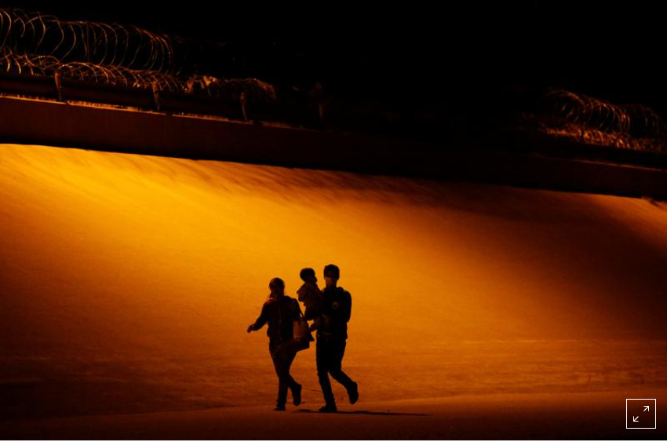

WASHINGTON/MEXICO CITY (Reuters) - U.S. officials will ask authorities in Mexico and Guatemala to help stem migrant traffic, White House press secretary Jen Psaki said on Monday, as the Biden administration struggles to contain a burgeoning humanitarian challenge along the U.S. border with Mexico.
President Joe Biden dispatched U.S. envoys, including White House border coordinator Roberta Jacobson, to the two countries on Monday for talks on how to manage the increase in the number of migrants heading for the U.S.-Mexican border. When asked if the U.S. delegation would seek support from local officials, Psaki told a news briefing: “Absolutely, part of our objective as Roberta Jacobson,...conveyed when she was in here just a few weeks ago, was that we need to work in partnership with these countries to address the root causes in their countries to convey clearly and systematically that this is not the time to travel.” Jacobson was joined by Juan Gonzalez, the National Security Council’s senior director for the Western Hemisphere, and Honduran-born diplomat Ricardo Zuniga, just appointed by the State Department as the Northern Triangle special envoy. Gonzalez will continue to Guatemala to meet Guatemalan officials, as well as representatives from civil society and non-governmental organizations. Biden’s promise to end former President Donald Trump’s hardline immigration policies has been complicated by a recent spike in the number of migrants crossing the border illegally. The increase in the number of migrants fleeing violence, natural disasters and economic hardship in Central America is testing Biden’s commitment to a more humane immigration policy. White House spokeswoman Emily Horne said Jacobson’s goal in Mexico is developing “an effective and humane plan of action to manage migration.”
Back